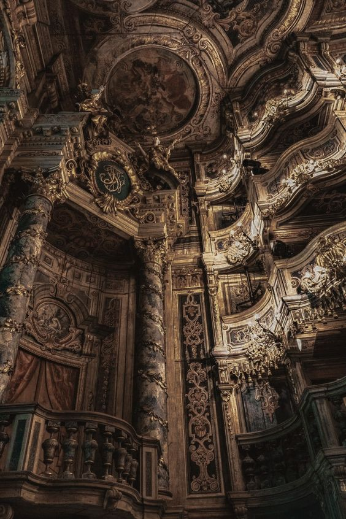
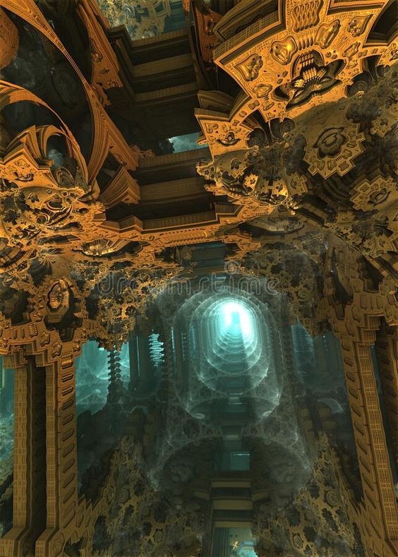
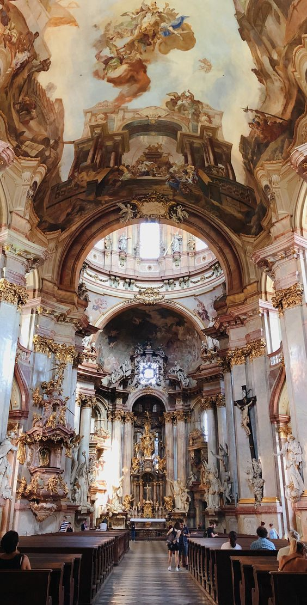
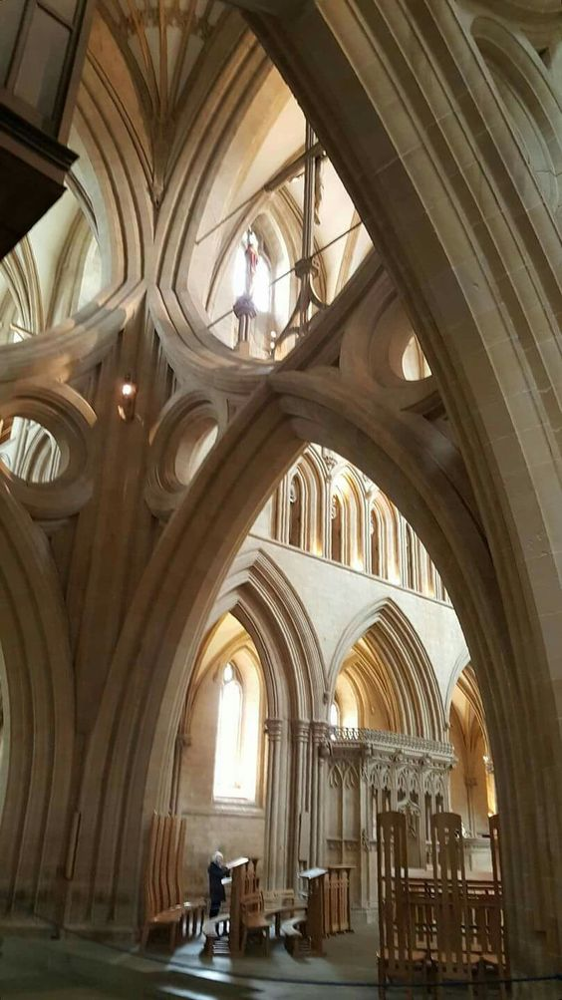
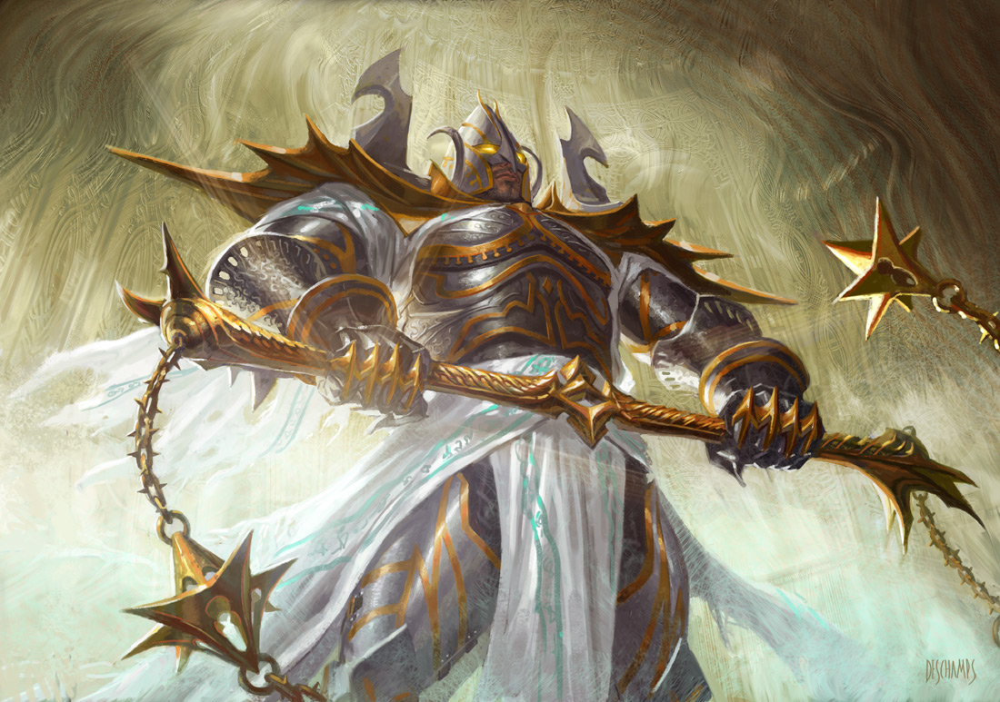
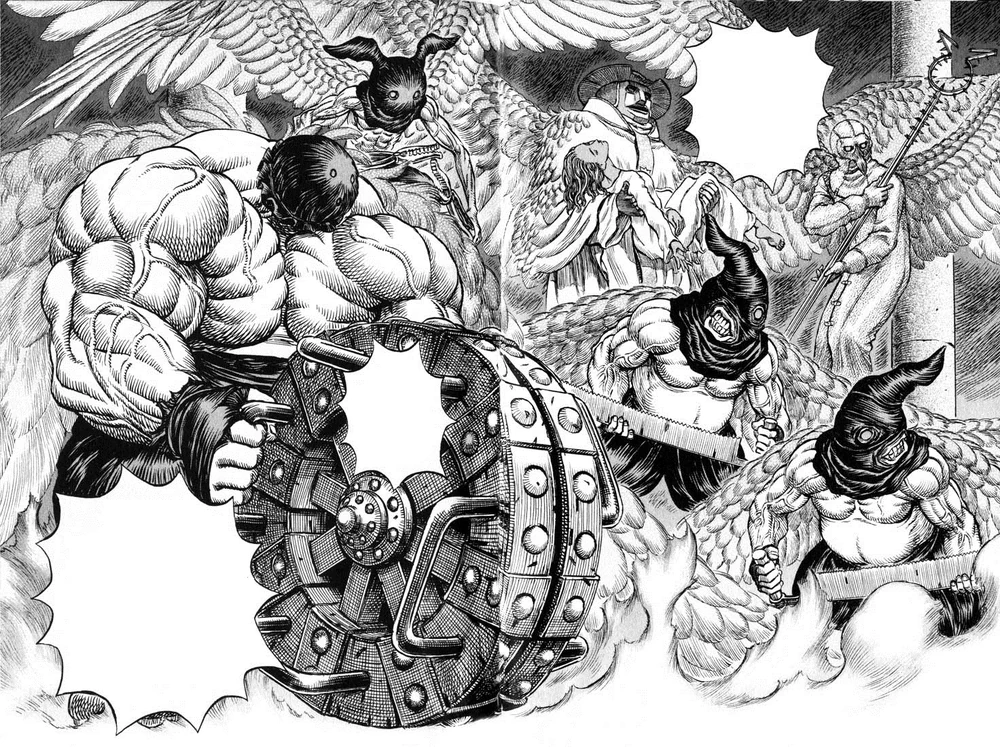

(Volume warning)
OVERVIEW
-
Top-down design (world and lore drive gameplay)
-
Set in an endless maze of gothic architecture and crushing religious weight
-
The player is practically microscopic compared to the scale of the rest of the world
-
Player exists an infinite number of levels into the fractal, and could potentially go down an infinite number more
SETTING REFERENCES
Gothic architectural 3D fractals
  
ENEMY / CHARACTER REFERENCES
 